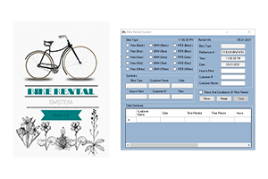
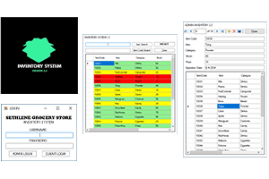

IT graduate eager to apply academic knowledge in a professional setting. Seeking to gain hands-on experience and contribute to a dynamic IT team. Committed to learning and growth in the field.
Began studying at CVsU in 2019 pursuing a Bachelor of Science in Information Technology (BSIT). Commenced learning C# programming followed by Python. Gained knowledge in SQL for databases. Acquired proficiency in PHP, SQL, and CSS fundamentals. Developed the capstone project CEITRMS using PHP, JavaScript, and CSS. CEITRMS offers users visual data representation and report management features, including export to Excel functionality.
Started with Visual Basic, explored different operating systems and development software. Developed the Bike Rental System using Visual Basic as part of coursework requirements.
• Proficient in computer hardware (internal and external).
• Skilled in Windows OS installation, upgrade, downgrade, and troubleshooting.
• Experienced in printer connectivity and network setup.
• Knowledgeable in Microsoft Office Applications (Excel, PowerPoint, Word).
• Basic programming in Java, Python, PHP, and C++.
• Fundamentals of web development: HTML, CSS, PHP, SQL.
Develop, deploy, and support software. Assist users with technology and provide support for computers and laptops.
Assembling/disassembling systems, setting up hardware, and installing software. Identify hardware/software issues with clients.
Managed simulator room readiness, inspected and updated computers, and provided technical support using ticketing system. Installed RJ45 connectors for 1Gbps connections.
Encoded and organized data, assisted with office tasks, and ensured information was processed efficiently.
Developed a PHP/Bootstrap/JavaScript web app for sari-sari stores, including inventory management, sales analytics, and POS with barcode scanning.
Developed a web application for CvSU Indang facilitating licensure exams with multi-tier access, visual data presentation, and report generation.

Bike Rental System

Sari sari Store Inventory
Automated System